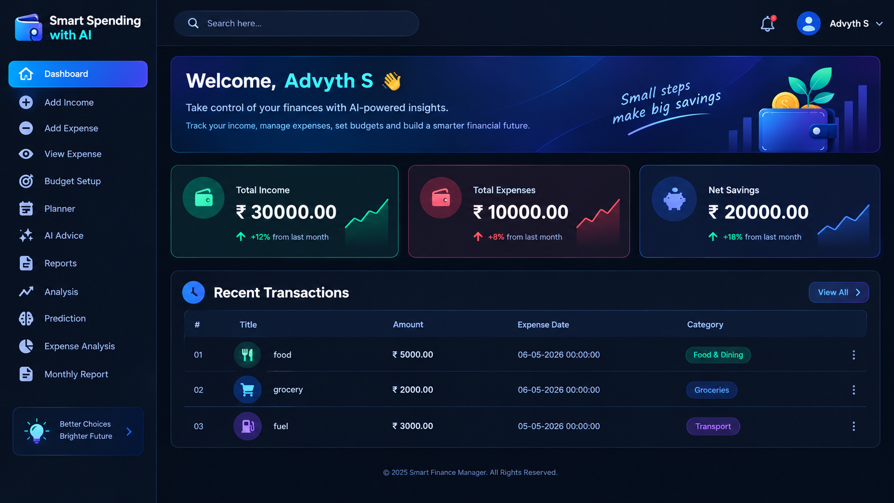

Smart Spending with AI
An intelligent personal finance management platform designed to process raw transaction histories, extract financial indicators, and leverage Artificial Neural Networks (ANN) to predict overspending risks and provide dynamic, voice-enabled recommendations.

The Problem
Traditional personal finance management relies heavily on manual bookkeeping and static spreadsheets. These passive tools only record historical data without offering dynamic foresight, leaving users blind to impending overspending risks and budget deficits until after they occur.
The Solution
Smart Spending with AI transforms passive tracking into proactive decision support. By executing automated data preprocessing and feature extraction, the integrated Artificial Neural Network evaluates real-time income-to-expense ratios, forecasts budget shortfalls, and delivers actionable savings advice.
System Architecture & Data Flow
The application follows a multi-layered ASP.NET architecture where user entries flow seamlessly through feature extraction and model prediction down to interactive visual reports:
1. Data Ingestion
User logs income, daily expenses, and category budgets into SQL Server.
2. Preprocessing & Feature Extraction
Normalizes data and extracts features (savings ratio, budget utilization, expense trends).
3. ANN Model Inference
Backpropagation neural network predicts overspending risk and evaluates savings potential.
4. Dynamic Insights & Alerts
Triggers visual dashboards, automated notifications, and voice-assisted recommendations.
Core Highlights & Technical Metrics
Developed using an enterprise-grade ASP.NET web framework paired with C#.NET backend services, the system offers superior prediction performance compared to conventional machine learning models.
- 98.98% Model Accuracy: Outperforms SVM (94.8%), KNN (92.4%), and Decision Trees (90.6%) in classifying financial risk behavior.
- Automated Feature Engineering: Converts raw transaction logs into structural indicators such as monthly expense variance and category utilization ratios.
- Proactive Warning Engine: Automatically detects high-risk categories and alerts users prior to budget limit breaches.
- Multimodal Accessibility: Integrates dynamic visual charts along with speech synthesis (Text-to-Speech) for spoken AI financial advice.